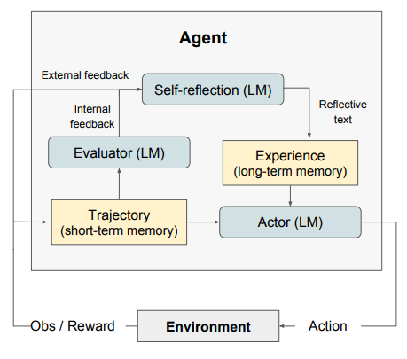

SYSTEM_PROMPT = """
You are an assistant trying to help me determine which city in the United States I should live in.
"""
ROLE_PROMPT = """
Solve a question answering task with interleaving Thought, Action, Observation steps.
Respond ONLY with ONE JSON-complaint string of the format:
{{
"type": "Thought" or "Action"
"content": "content of Thought, Action, or Observation"
}}
The "content" of Action is either "Search[arguments]" or "Finish[answer]", where:
-`"Search[arguments]"` means to search the web with arguments
-`"Finish[answer]"` means to finish the steps with an answer. You should output `"Finish[answer]"` as soon as you've gathered enough information
to answer the question.
The "content" of Thought is a reasoning about what Action to take next based on previous Observation. DO NOT output new lines for Thought content.
Example pattern:
Question:
"Which city should I live in and what activities does it provide? I enjoy walkable cities."
Thought 1:
{{
"type": "Thought"
"content": "To find which city you should live in, I need to search for a list of most walkable cities in the
United States and their temperatures."
}}
Action 1:
{{
"type": "Action"
"content": "Search[Most walkable American cities]"
}}
Observation 1:
{{
"type": "Observation"
"content": "One of the most walkable cities in the U.S. is New York."
}}
Thought 2:
{{
"type": "Thought"
"content": "I need to search what hobbies or activities are available in New York."
}}
Action 2:
{{
"type": "Action"
"content": "Search[What hobbies or activities are available in New York?]"
}}
Observation 2:
{{
"type": "Observation"
"content": "From big highlights like Times Square to quaint walks locals love. New York City is a hub of culture
and adventure, offering an array of activities for everyone. Explore iconic landmarks like the Statue
of Liberty, the Empire State Building, and Central Park, or marvel at art of the Museum of Modern Art."
}}
Thought 3:
{{
"type": "Thought"
"content": "From the search results, New York City is the most walkable city in America with hobbies or activites
like exploring city landmarks or visiting museums."
}}
Action 3:
{{
"type": "Action"
"content": "Finish[I recommend you live in New York City, which is one of the most walkable cities in America. There
you can explore city landmarks Statue of Liberty, the Empire State Building, and Central Park, or marvel
at art of the Museum of Modern Art]"
}}
...
Return type and content for ONE step ONLY
"""3 Reflection
Reflection is one of the most effective design patterns for agents, where a LLM enters into an iterative loop of problem solving and feedback until a solution is reached. This feedback can be external or intrinsic, where external feedback refers to receiving feedback from external evaluators such as humans, code execution output, or unit test results, and intrinsic feedback refers to self-critique from the same LLM on its previous response. The reflection process is depicted in Figure 3.1.

There has been some debate regarding whether self-feedback from the same LLM alone can drive performance improvements. Madaan et al. introduced Self-Refine, a reflection framework that relies completely on intrinsic feedback (Madaan et al. 2023). After the initial response construction, each iteration of Self-Refine consists of the steps of feedback and refinement. Each step uses the same LLM, but differs in the prompt that contains instructions (e.g. instructions for feedback or refinement) and few-shot examples. Empirically, this was shown to improve performance materially, with most of the improvement occurring in the initial iterations of reflection. However, the improvement is not necessarily monotonic, and Madaan et al. observed that Self-Refine was most effective when the feedback is specific, actionable, or broken down into different evaluation dimensions. However, another group of researchers from Google DeepMind independently assessed instrinsic self-correction and found that its effectiveness was limited, instead causing performance degradation with each self-refine iteration (Huang et al. 2023). They concluded that this discrepancy was caused by flawed experimental design from the Self-Refine study where the complete set of requirements was included in the feedback prompt instead of the initial response instruction. As a result, it is unclear whether the improvement was due to “leakage” of requirements from the feedback or from the iterative process of self-improvement. When the complete set of requirements was included in the initial response instruction, Huang et al. observed that standard prompting outperformed Self-Refine.
These studies show that in order to reliably improve after reflection, external feedback is necessary. Intuitively, this makes sense because if the bottleneck of performance is due to the lack of certain parametric knowledge (i.e. knowledge trained into the weights of a model), then feedback from the same LLM is unlikely to provide the missing knowledge required to arrive at the solution. We next introduce self-correction from external feedback and ReAct as effective reflection examples that make use of external feedback or signal to drive performance beyond prompting a LLM in isolation.
3.1 Self-Correction with External Feedback
Multiple works of research has shown that external feedback reliably and materially improves performance on the problem an agent is trying to solve, with the LLM self-correcting its previous response using the provided feedback (Chen et al. 2023; Shinn et al. 2023; Gou et al. 2023). Gou et al. introduced a simple version of this by using a set of tools through which critiques on correctness are obtained. The critiques are used by the LLM to improve its previous response, and the loop terminates when the critiques determine the latest response to be correct (Gou et al. 2023). Shinn et al. introduced the Reflexion framework that added more bells and whistles by (1) integrating LLM-driven self-reflection with external feedback signal to serve as the final feedback and (2) incorporating short-term memory of conversation history (i.e. trajectory) and long-term memory of past verbal feedback. By using an evaluator LLM to score the latest LLM response and using another LLM to suggest actionable feedback based on the score, Reflexion improves the quality of the feedback. With memory of the LLM’s past interactions with the envornment and their outcomes, the actor LLM essentially undergoes reinforcement learning based on in-context learning examples. The Reflexion framework is best illustrated with the diagram in Figure 3.2.

Finally, Chen et al. applied reflection to programming agents to simulate rubber duck debugging, where debugging is done by explaining code and following the execution results (Chen et al. 2023). Like Reflexion, the feedback step includes both the external signal (from code execution) and a LLM generated explanation of the code as the final feedback provided to the same LLM for the next iteration of code generation. In agreement with other research, the authors found that receiving feedback from code execution is important for improving performance consistently.
3.2 ReAct
ReAct, which stands for reasoning and acting, is a prompting technique to combine reasoning and acting with language models to solve diverse language reasoning and decision making tasks (Yao et al. 2023). By interspersing actions and subsequent observations with a LLM’s reasoning traces, Yao et al. showed that this reduces hallucination and error propagation, demonstrating superior performance over baselines like standard prompting, chain-of-thought prompting (i.e. reasoning only), and acting only (i.e. ReAct without thoughts). It is believed that reasoning improves an agent’s subsequent actions via mechanisms such as introducing notions of planning, injecting extra parametric knowledge, or by extracting important parts of observations.
Concretely, ReAct prompting induces a repeating pattern of thinking, acting, and receiving observation until a task is solved. Starting with a question, ReAct prompting invokes the LLM to output thinking traces on how to solve the problem, followed by another LLM invocation on what action to output given the thinking. The selected action is executed, then the corresponding observation is added to the agent’s short-term memory (i.e. conversation history), and the process repeats. Thus, the number of LLM calls is \(O(N)\) in the number \(N\) of think, act, and observation iterations required to solve a problem, making ReAct prompting relatively expensive. However, ReAct improves the flexibility of an agent to address open-ended requests dynamically. Additionally, Yao et al. reported ReAct introduces strong generalization capabilities to new problems with just a few in-context examples.
We next use ReAct to implement an agent that uses reasoning and internet search to recommend where to live in the United States based on their preferences. Our ReAct prompt first describes to the LLM that we wish to solve the problem using a thinking, action, and observation pattern, instructing the LLM output format at each step, explaining the action space, and how to end. Then, this is followed by a one-shot example of a thought, action, and observation pattern used to address a sample question. The prompt ends by instructing the agent to only output tokens for action or thinking.
To implement the actual agent, we essentially wrap the LLM call within a while loop until a maximum number of steps is reached. The agent class is additionally equipped with:
- Short-term memory, implemented simply as a string in this protype.
- The internet search tool
DuckDuckGoSearchRun, which simply accepts a natural language query and responds with a paragraph of text results.
Then, in each iteration we parse the LLM response to decide what action to take. The initial question and subsequent thoughts, actions, and observations are continually added to the conversation history to influence what the LLM will output next. For example, if the last item in the history is an observation, then the LLM will output a thinking trace based on following the ReAct prompt.
from langchain_community.tools import DuckDuckGoSearchRun
import json
import boto3
import warnings
warnings.filterwarnings('ignore')
class ReAct_agent:
def __init__(self, client, system_prompt, role_prompt, max_steps=20, search_max_length=1000):
self.client = client
self.SYSTEM_PROMPT = system_prompt
self.ROLE_PROMPT = role_prompt
self.ddg_search = DuckDuckGoSearchRun()
self.max_steps = max_steps
self.step_num = 0
self.search_max_length = search_max_length
self.history = ""
def ask(self, message, verbose = True):
self.add_to_memory(message)
model_response = self.invoke_llm(message)
model_response_json = json.loads(model_response.replace("```json", "").replace("```", "").strip())
response_type = model_response_json["type"]
while self.step_num < self.max_steps:
self.add_to_memory(model_response)
if response_type == "Action":
prefix, content = self.parse_action(model_response_json["content"])
if prefix == "Finish":
return content
elif prefix == "Search":
observation = self.search(content)
if verbose:
print(json.dumps({"type": "Observation", "content": observation}, indent=4))
self.add_to_memory(json.dumps({"type": "Observation", "content": observation}))
model_response = self.invoke_llm(self.history)
model_response_json = json.loads(model_response.replace("```json", "").replace("```", "").strip())
response_type = model_response_json["type"]
if verbose:
print(json.dumps(model_response_json, indent=4))
self.step_num += 1
def search(self, message):
return self.ddg_search.invoke(message)[:self.search_max_length]
def invoke_llm(self, message):
bedrock_runtime_response = bedrock_runtime.converse(
modelId = "us.anthropic.claude-3-7-sonnet-20250219-v1:0",
system = [
{'text': self.SYSTEM_PROMPT},
{'text': self.ROLE_PROMPT}
],
messages = [{"role": "user", "content": [{"text": message}]}]
)
return bedrock_runtime_response["output"]['message']['content'][0]['text']
def add_to_memory(self, message):
self.history += ", " + message
def parse_action(self, message):
start = message.find('[')
end = message.find(']')
prefix = message[:start]
content = message[start+1:end]
return prefix, contentNow we ask the agent where we should live if we prefer cities with access to nature and outdoor activities.
bedrock_runtime = boto3.client("bedrock-runtime", region_name="us-west-2")
agent = ReAct_agent(bedrock_runtime, SYSTEM_PROMPT, ROLE_PROMPT, max_steps = 15)
user_input = "Which city should I live in? I enjoy outdoor activities."
answer = agent.ask(user_input)
print(answer){
"type": "Action",
"content": "Search[best US cities for outdoor activities]"
}
{
"type": "Observation",
"content": "Nov 16, 2024 \u00b7 Adventure awaits in these top 10 US cities ! Discover destinations perfect for hiking, biking, skiing, and more outdoor activities across America. Mar 19, 2025 \u00b7 15 U.S . Cities with the Best Outdoor Activities for Nature Lovers March 19, 2025 by Donna Dizon Leave a Comment Many nature lovers long to live in a cabin out in the country, but for most of us, that\u2019s not a reality. Sep 2, 2025 \u00b7 Read Time: 8 min read Summary: Looking for the best cities for outdoor activities in the U.S .? Check out Alexandria, VA for its beautiful parks and trails, Boston, MA for skiing and kayaking, Denver, CO for mountain adventures, Portland, OR for hiking and camping, Roseville, CA for river rafting and national parks, Salt Lake City, UT for skiing and hiking, and Seattle, WA for fishing and ... Image Editorial Credit: Farragutful via Wikimedia Commons Park City is a year-round outdoor destination famous for its ski resorts, including the largest ski area in the US . In the winter, the a"
}
{
"type": "Thought",
"content": "Based on the search results, I've found several cities that are known for outdoor activities. The top contenders appear to be Denver, CO; Portland, OR; Salt Lake City, UT; Seattle, WA; and Park City, UT. I should get more specific information about a few of these cities to provide better recommendations. Let me search for more details about Denver, as it's known for mountain adventures which could be appealing for outdoor enthusiasts."
}
{
"type": "Action",
"content": "Search[outdoor activities in Denver Colorado]"
}
{
"type": "Observation",
"content": "Mar 7, 2025 \u2014 There are tons of opportunities to go hiking, running and fly-fishing in and around the city. Denver is a paradise for cyclists with bike lanes and paved paths ... 11 hours ago \u2014 1. Small Group Tour of Pikes Peak and the Garden of the Gods from Denver \u00b7 2. Discover Rocky Mountain National Park \u00b7 3. Red Rocks & Beyond \u00b7 4 ... The conversation discusses various day trip destinations and activities in Colorado, including Tiny Town , Cheyenne Mountain Zoo, Georgetown Railroad, and South ... Apr 8, 2025 \u2014 Denver's spring and summer months are packed with free things to do like strolling through the city's vast park system , checking out rock 'n' roll ... May 6, 2025 \u2014 1. Tour the Colorado State Capitol \u00b7 2. Tour the Denver Mint \u00b7 3. Visit one of Denver's many museums \u00b7 4. Immerse yourself in the city's art scene \u00b7 5. Enjoy ..."
}
{
"type": "Thought",
"content": "Denver appears to be a great option for outdoor activities, with hiking, running, fly-fishing, cycling paths, and proximity to attractions like Rocky Mountain National Park, Pikes Peak, and Garden of the Gods. Let me check another popular option from the list - Portland, OR - to provide a comparative recommendation."
}
{
"type": "Action",
"content": "Search[outdoor activities in Portland Oregon]"
}
{
"type": "Observation",
"content": "United States Oregon (OR) Portland Things to Do in Portland Outdoor Activities in Portland Founded by Filipina cyclocross racer Gritchelle Fallesgon and Korean-born cyclist Molly Sugar, Friends on Bikes diversifies the cycling scene by connecting and hosting rides for women and non-binary people of color. Launched in 2017, this Portland -based group organizes monthly all-levels social rides, as well as \u201cbike-packing\u201d trips, workshops and ... See full list on travelportland.com Dedicated to inspiring, connecting and engaging Latino communities in the outdoors, Latino Outdoors PDX organizes events and showcases how conservation roots have been ingrained in Latino cultura for generations. See full list on travelportland.com Through outings, skill session, and climb nights at local rock climbing gyms, PDX Climbers of Colorlevels the playing field by eliminating the social and economic roadblocks that typically make the sport inaccessible. See full list on travelportland.com Portland \u2019s Pam"
}
{
"type": "Thought",
"content": "I've gathered information about Denver and Portland, two cities known for outdoor activities. Denver offers hiking, running, fly-fishing, cycling paths, and proximity to natural attractions like Rocky Mountain National Park. Portland has a strong cycling community and climbing opportunities. To make a more comprehensive recommendation, I should explore another top contender for outdoor activities - Seattle, WA."
}
{
"type": "Action",
"content": "Search[outdoor activities in Seattle Washington]"
}
{
"type": "Observation",
"content": "From hiking & biking to kayaking & skiing add a dash of adventure to your vacation with these fun outdoor activities in Seattle , Washington ! Aug 28, 2025 \u00b7 Log off, switch off and reconnect with the outdoors with these top picks of the best outdoor activities in Seattle . It's no secret that Washington boasts beautiful nature spots. Seattle itself, although it's a big city, is a hub for nature lovers with its plethora of parks, waterfront access, arboretums, and lake activities . There are so many outdoorsy things to do in Seattle , you'll get to fall in love with Washington's nature all from the convenience of staying in Seattle . What are the top water activities in Seattle ? Lake Union is the go-to spot for water activities in Seattle . Rent a kayak or paddleboard and enjoy gliding past the historic houseboats, including the one featured in \"Sleepless in Seattle .\" Lake Washington also offers opportunities for boating, paddleboarding, and wildlife spotting. Explore Seattle's stunn"
}
{
"type": "Thought",
"content": "I now have information about three top cities for outdoor enthusiasts: Denver, Portland, and Seattle. Each offers unique outdoor experiences. Denver has mountain activities, hiking, cycling, and proximity to natural wonders. Portland has a cycling culture and climbing opportunities. Seattle offers water activities on Lake Union and Lake Washington, hiking, biking, kayaking, and skiing. To make a well-informed recommendation, I should look at one more city from the initial list - Salt Lake City, which was mentioned as good for skiing and hiking."
}
{
"type": "Action",
"content": "Search[outdoor activities in Salt Lake City Utah]"
}
{
"type": "Observation",
"content": "Founded in 2020, the Outdoor Market Alliance is a non-profit association dedicated to supporting community-driven initiatives. We are a collective of 25 independent sales and marketing \u2026 Apr 15, 2025 \u00b7 It\u2019s often overshadowed by attractions in Denver, but the state\u2019s fifth-largest city features fun outdoor recreation, historic sites, and stellar places to shop and dine. This guide \u2026 REI Lakewood provides outdoor enthusiasts in the Lakewood, Colorado, area with top-brand gear & clothing for camping, climbing, cycling, fitness, hiking, paddling, skiing, snowboarding and \u2026 Top-brand gear, clothing\u2014and outdoor adventures! Plus rentals, classes, events, expert advice and more. Visit REI Co-op online and in-store. Explore 12 top spots with great access and hunter lodging. Outdoor Life has been the go-to publication of America\u2019s diehard hunters, shooters, and anglers since 1898. Our stories are \u2026"
}
{
"type": "Thought",
"content": "The search results for Salt Lake City didn't provide specific information about outdoor activities there, though it was mentioned in the initial search as being good for skiing and hiking. From the information I've gathered about Denver, Portland, and Seattle, I now have enough details to make a recommendation. All three cities offer excellent outdoor activities, but they have different strengths. Denver is great for mountain activities, hiking, and proximity to natural parks. Portland has a strong cycling and climbing culture. Seattle offers water activities as well as hiking, biking, and winter sports. I should now provide a recommendation based on this comprehensive information."
}
{
"type": "Action",
"content": "Finish[Based on your interest in outdoor activities, I recommend Denver, Colorado as an excellent city to live in. Denver offers an exceptional variety of outdoor recreation opportunities including hiking, running, cycling on extensive bike paths, and fly-fishing in and around the city. You'll have access to world-class natural attractions like Rocky Mountain National Park, Pikes Peak, and Garden of the Gods. The city has a robust park system and enjoys abundant sunshine year-round, making it ideal for outdoor enthusiasts. Alternatives worth considering are Portland, Oregon (known for its cycling culture and climbing opportunities) and Seattle, Washington (which offers water activities like kayaking and paddleboarding on Lake Union and Lake Washington, plus nearby hiking, biking and skiing).]"
}
Based on your interest in outdoor activities, I recommend Denver, Colorado as an excellent city to live in. Denver offers an exceptional variety of outdoor recreation opportunities including hiking, running, cycling on extensive bike paths, and fly-fishing in and around the city. You'll have access to world-class natural attractions like Rocky Mountain National Park, Pikes Peak, and Garden of the Gods. The city has a robust park system and enjoys abundant sunshine year-round, making it ideal for outdoor enthusiasts. Alternatives worth considering are Portland, Oregon (known for its cycling culture and climbing opportunities) and Seattle, Washington (which offers water activities like kayaking and paddleboarding on Lake Union and Lake Washington, plus nearby hiking, biking and skiing).We see that with ReAct prompting, the agent first got a list of candidate cities, then searched each candidate city for specific outdoor activities before returning the final answer, which is Denver, Colorado.
3.3 LLM as Optimizers
Yang et al. from DeepMind showed that a LLM can even be used to optimize numerical and discrete problems, using linear regression and the traveling salesman problem as example problems (Yang et al. 2023). Given the meta-prompt, which desribe the problem, and a set of candidate solutions and their corresponding scores, the LLM can utilize in-context learning to iteratively improve its solution. Crucially, this requires an external objection function evaluator to score solutions at each iteration, which are then added to the growing set of solution-score pairs. The solution-score pairs are sorted to presumably better help the LLM identify patterns that can be used to further refine the solution. Figure 3.3.

[example prompt]
[prompt optimization]
Chen, Xinyun, Maxwell Lin, Nathanael Schärli, and Denny Zhou. 2023. “Teaching Large Language Models to Self-Debug.” arXiv Preprint arXiv:2304.05128.
Gou, Zhibin, Zhihong Shao, Yeyun Gong, Yelong Shen, Yujiu Yang, Nan Duan, and Weizhu Chen. 2023. “Critic: Large Language Models Can Self-Correct with Tool-Interactive Critiquing.” arXiv Preprint arXiv:2305.11738.
Huang, Jie, Xinyun Chen, Swaroop Mishra, Huaixiu Steven Zheng, Adams Wei Yu, Xinying Song, and Denny Zhou. 2023. “Large Language Models Cannot Self-Correct Reasoning Yet.” arXiv Preprint arXiv:2310.01798.
Madaan, Aman, Niket Tandon, Prakhar Gupta, Skyler Hallinan, Luyu Gao, Sarah Wiegreffe, Uri Alon, et al. 2023. “Self-Refine: Iterative Refinement with Self-Feedback.” Advances in Neural Information Processing Systems 36: 46534–94.
Shinn, Noah, Federico Cassano, Beck Labash, Ashwin Gopinath, Karthik Narasimhan, and Shunyu Yao. 2023. “Reflexion: Language Agents with Verbal Reinforcement Learning, 2023.” URL Https://Arxiv. Org/Abs/2303.11366 1.
Yang, Chengrun, Xuezhi Wang, Yifeng Lu, Hanxiao Liu, Quoc V Le, Denny Zhou, and Xinyun Chen. 2023. “Large Language Models as Optimizers.” In The Twelfth International Conference on Learning Representations.
Yao, Shunyu, Jeffrey Zhao, Dian Yu, Nan Du, Izhak Shafran, Karthik Narasimhan, and Yuan Cao. 2023. “React: Synergizing Reasoning and Acting in Language Models.” In International Conference on Learning Representations (ICLR).